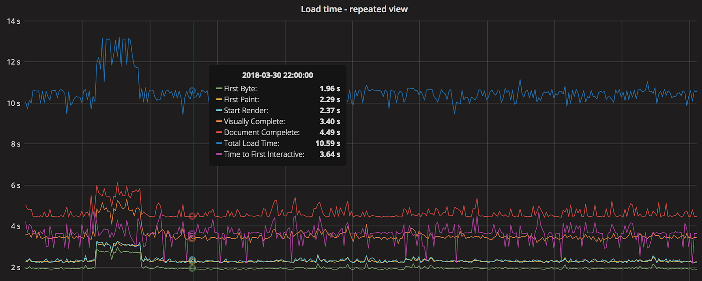

Ludziska słuchajta! Tu jest zarąbisty wstęp do warsztatów. Piękna proza o tym czego się nauczycie. I coś o nas. Strzeliliśmy też fancy foty i krótkie info skąd i dokąd zmierzamy.
Michalina Ożibko | Tomasz Wojciechowski | Oskar Kleska | Jacek Jaworski |
Sukienki i pączki | Ruda broda i wyjątkowo czuły bullshitometr | Kleskę przekuł w sukces | Jakość i League of Legends |
Co to za ludzie?
Jesteśmy czwórką zapaleńców, pracujących w firmie, która rozwiązaniami jakościowymi ściga takich gigantów jak Google czy Facebook. Nie akceptujemy statusu quo.
Co zrobisz
W trakcie warsztatów wzbogacisz wcześniej przygotowany projekt oparty o Selenium o :
|
Czego się nauczysz
- Jak rozbudować framework testowy o automatyczne checki maili, layoutów i wydajności
- Poznasz więcej możliwości testów E2E
Czego potrzebujesz:
Java 8
Po zainstalowaniu upewnij się że setup jest poprawny wpisując w konsoli:
java -version
Jeżeli wszystko jest ok, powinieneś zobaczyć mniej więcej coś takiego:
java version "1.8.0_144" Java(TM) SE Runtime Environment (build 1.8.0_144-b01) Java HotSpot(TM) 64-Bit Server VM (build 25.144-b01, mixed mode)
Chrome
IntelliJ IDEA
- Do tego potrzebujemy plugin do IDE odpowiedzialny za ogarnięcie BDD i Cucumbera
- Po uruchomieniu IDE użyj skrótu klawiszowego ⇧⌘A (⇧+Ctrl+A dla Windowsa) i wyszukaj menu ‘Plugins'.
- W wyszukiwarce pluginów wpisz ‘Cucumber', następnie kliknij ‘Search in repositories'. Zainstaluj ‘Cucumber for Java'

Repo:
Projekt, na którym będziemy pracować znajduje się tu:
Zostawiamy Tobie jak go sobie wciągniesz do IDE. Po zasetupowaniu projektu (rozwiązywanie dependencji może chwilę potrwać) znajdź w projekcie plik JobAgentConfirmation.feature i spróbuj go uruchomić
Po chwili powinieneś zobaczyć okno Chrome'a wyskakujące znienacka i wbijające na jakąś stronę z dopiskiem "chrome is being controlled by automated test software". Now we're talkin!
Inbucket
W dużym skrócie - aplikacja do odbierania i wyświetlania maili.
- Dostęp z sieci lokalnej lub Twojego komputera
- Żadnych haseł
- Żadnego tworzenia skrzynek do testów
- Żadnego zewnętrznego serwera POP3/SMTP
- Automatyczne czyszczenie skrzynek
Okej... I jak to działa?
Bez wchodzenia w techniczne szczegóły, możesz wysłać maila i odebrać maila używając dowolnej skrzynki i domeny, pod którą jest postawiony Inbucket. Na tych warsztatach, użyjemy instancji utworzonej w AWS i domyślnej domeny.
Przykład:
Adres mailowy: |
Link do skrzynki: http://ec2-34-244-6-12.eu-west-1.compute.amazonaws.com/mailbox?name=welcome |
I mam to wszystko sprawdzać manualnie...?
Oczywiście, że nie! Inbucket Java Client, który napisaliśmy, umożliwia Ci komunikację z serwerem Inbucketa i... używanie go w testach.
Email as page
Pisanie testów Selenium dla statycznej strony jest bardzo proste, prawda? Czy w przypadku emaila wygląda to inaczej? Nie, jeśli używasz Inbucketa.
Widok HTML w Inbuckecie pozwala na wyświetlenie emaila dokładnie tak samo, jak każdej innej statycznej strony. To znaczy, że jeśli używasz PageObjectPattern, musisz utworzyć PageObject dla emaila, którego chcesz sprawdzić. Przykład? Plik JobAgentConfirmationEmailPage w warsztatowym repo.
PARTY TIME!
Przełącz się na brancha EmailValidation
- W klasie JobAgentConfirmationEmailPage.java znajdziesz metodę confirmEmailMessageFistep, w której brakuje części odpowiedzialnej za kliknięcie w przycisk potwierdzający założenie konta/subskrypcję. Nie wiem co za leń nie dopisał tej jednej linijki, ale wszyscy poszli na kebsa i jesteś jedyną osobą, która może to naprawić.
- Stażysta piszący metodę getMessageUrl w klasie EmailChecker.java nie wiedział jak wygląda url do HTML'owej wersji, pomożesz mu? Firma JanuszPolExDevelopment & Studenci zawsze daje możliwość wyboru, więc jeśli odpowiesz "nie", pan Zbysiu odprowadzi Cię do wyjścia.
Czym jest Galen ?
Galen jest bardzo prostym frameworkiem służącym do testowania wyglądu strony. Jego prostota polega na tym, że większość pracy niezbędna do uruchomienia testu sprowadza się do napisania pliku spec, który jest swoistą "mapą strony". W pliku tym deklarujemy obiekty i relacje między nimi. Zabierzmy się więc do roboty ...
Przygotujmy plik spec dla naszego projektu..
Rozwiązanie:
1. W dowolnym edytorze tekstowym stwórz plik o nazwie email.gsec i zamieść go w projekcie w lokalizacji:
steroids_workshops/src/test/resources/com/steroids/example/specs/
2. W tym pliku zdefiniuj obiekty, które chcesz przetestować. Zacznij od słowa kluczowego objects:
@objectsTeraz pora na zadeklarowanie obiektów. Możesz to zrobić używając id, css lub xpath.
@objects
menu css ul.menuTo tylko przykład. Zrób to samo dla elementów maila, które chcemy przetestować (headery).
3. Utwórz sekcję by nadać strukturę swoim poczynaniom. Robi się to tak:
= Menu =Utwórz sekcję dla naszego przykładu.
4. A teraz mięcho. Opiszmy relacje między zadeklarowanymi elementami. Za chwilkę nasz test będzie gotowy do odpalenia. Poniżej masz bardzo prosty przykład.
= Menu =
@on mobile
menu:
height 300 px
@on desktop
menu:
height 40 px Hint:
Do napisania testu z zadania wystarczą Ci słowa kluczowe:
height
text is
below
Po więcej zajrzyj tutaj:
Test passed ... i co dalej ?
Sama informacja, że testy przeszły często nie wystarczy.
Rzućmy okiem na :
- Raport z testów
- Heat mapę
Protip
Zajrzyj do katalogu target i otwórz 1-confirmation-email-layout.html. Voila!

Wydajność ma znaczenie.
Do zmierzenie wydajności naszej strony wykorzystamy Navigation Timing API.
Owe API dostępne jest we wszystkich współczesnych przeglądarkach, choć nadal zaskakująco dużo osób o nim nie słyszało.
Rozgrzewka:
Wejdź na dowolną stronę, otwórz narzędzia deweloperskie i w zakładce konsola wpisz:
window.performance.timingKonsola powinna wypluć coś takiego:
PerformanceTiming {navigationStart: 1524081709253, unloadEventStart: 0, unloadEventEnd: 0, redirectStart: 0, redirectEnd: 0, ...}Ta zwrotka to punkty w czasie w których wystąpiły dane atrybuty requestu, wyrażone w czasie uniksowym.
Atrybuty zdefiniowane w API:

Zacznijmy od dodania stepu.
W pliku JobAgentConfirmation.feature dopisz na końcu
Then I check performanceNastępnie w klasie HomePageStep znajdź komentarz :
//TODO: wydajność ma znaczenieUtwórz metodę checkPerf. Metoda ma być publiczna i nie zwracać nic czyli typu void.
public void checkPerf() {
}Powinna też mieć referencję do stepu w feature file.
@Then("^I check performance$")W samej metodzie wywołaj metodę checkPerformance() z klasy HomePage.
Tak, tej metody jeszcze nie ma, za chwilę ją napiszesz.
Na tą chwilę powinno to wyglądać tak:
@Then("^I check performance$")
public void checkPerf() {
homePage.checkPerformance();
}W klasie HomePage dodaj brakującą metodę checkPerformance():
public void checkPerformance() {}W pierwszej kolejności musimy wykonać skrypt który wyciągnie dane o wydajności.
Wykorzystamy do tego JavascriptExecutor - mechanizm wbudowany w Selenium służący włąśnie do wykonawania js'ów na podczas testu.
W metodzie checkPerformance() zainicjalizujmy JavascriptExecutora'a dodając:
JavascriptExecutor js = (JavascriptExecutor) getDriver();Nastętpnie wykonajmy skrypt, korzystając z metody ‘executeScript', jednocześnie zamieniając go na string'a:
String timings =
js.executeScript("return (window.performance.timing)").toString();Ok, mamy string'a z czasami. Teraz wyciągnijmy konkretne wartości i dokonajmy potrzebnych obliczeń.
Gson gson = new Gson();
Timings timingsJson = gson.fromJson(timings, Timings.class);
long pageLoadTime = timingsJson.loadEventStart - timingsJson.navigationStart;
long backendTime = timingsJson.responseStart - timingsJson.navigationStart;Na koniec wyświetlmy wyniki naszych obliczeń. Na potrzeby warsztatów wyrzucimy je do konsoli.
logInfo("pageLoadTime: " + pageLoadTime);
logInfo("backendTime: " + backendTime);Całość powinna wyglądać tak:
public void checkPerformance() {
JavascriptExecutor js = (JavascriptExecutor) getDriver();
String timings = js.executeScript("return (window.performance.timing)").toString();
Gson gson = new Gson();
Timings timingsJson = gson.fromJson(timings, Timings.class);
long pageLoadTime = timingsJson.loadEventStart - timingsJson.navigationStart;
long backendTime = timingsJson.responseStart - timingsJson.navigationStart;
logInfo("pageLoadTime: " + pageLoadTime);
logInfo("backendTime: " + backendTime);
}Podsumowując: napisaliście kawałek fajnego kodu, który możecie zabrać do firmy i coś z nim zrobić. Sprawdzić maila używając Inbucketa, layout Galenem, performance Navigation Timing API.
To jednak wierzchołek góry lodowej. Pod Selenium można podpiąć takie rzeczy jak notyfikacje na Slacku, przechwytywanie requestów http (tracking) czy wysyłanie danych performance do systemów monitorujących i wiele więcej.
Mało? Głodny wiedzy, a może masz z czymś problem? Tutaj możesz znaleźć kontakt do nas i obserwować terminy następnych warsztatów.
Tomek: https://www.linkedin.com/in/beardedqa/
Jacek: www.linkedin.com/in/tomektolama
Michalina: www.linkedin.com/in/jacekitomekmuszadorosnac